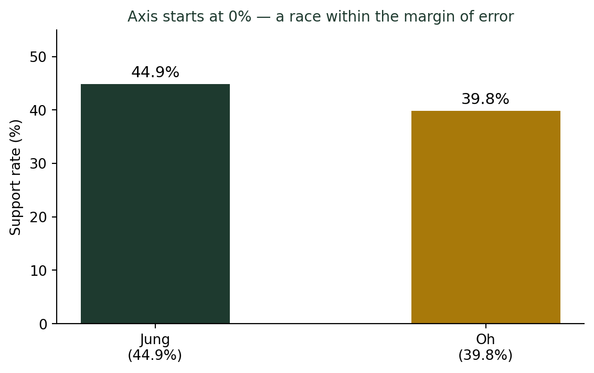
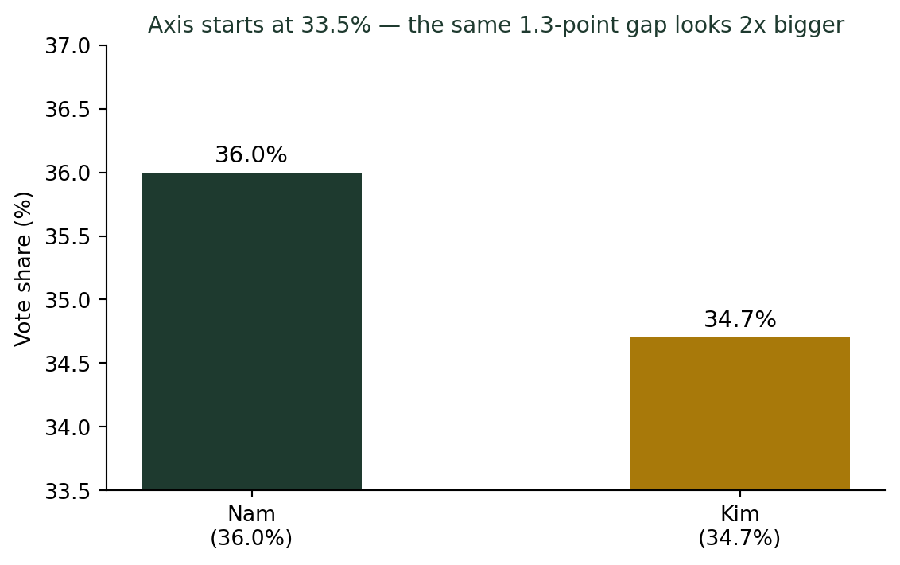

(그래프는 어떻게 우리를 속이는가) 막대그래프의 축을 자르면 차이가 커진다
통계기초
데이터시각화
2026년 5월, 서울시장 여론조사(정원오 44.9% vs 오세훈 39.8%)를 다룬 한 유튜브 방송의 그래프는 두 후보 차이를 실제보다 훨씬 크게 보이게 그렸다. SBS ’사실은’이 검증한 이 사례로, 축을 어디서부터 그리느냐의 문제를 다룬다.
화면 속 막대는 네 배 차이였다
이번 학기 통계 시각화 수업 준비를 하다가, 마침 딱 맞는 사례를 하나 발견했다. 2026년 6월 지방선거를 앞두고 한 유튜브 방송이 내보낸 서울시장 여론조사 그래프였다. 학생들에게 그 화면을 보여주며 묻는다. “이 두 후보, 지지율 차이가 얼마나 나 보여요?” 다들 “한쪽이 압도적으로 앞선 것 같은데요”라고 답한다.
실제 수치를 알려주면 다들 놀란다. CBS 의뢰로 한국사회여론연구소(KSOI)가 5월 12~13일 실시한 여론조사에서, 두 후보의 지지율 차이는 5.1%포인트였다. 정원오 44.9%, 오세훈 39.8%. 표본오차(±3.1%포인트)를 감안하면 우열을 단정하기 어려운 접전이었다. 그런데 그 유튜브 방송의 막대그래프에서는 한쪽 막대가 다른 쪽보다 거의 네 배 높게 그려졌다. SBS 팩트체크 프로그램 ’사실은’이 이를 검증해 지적하자, 제작진은 방송 중 “그래프를 수정하겠다. 너무 과장돼 있는데 경위를 파악해 보겠다”며 사과했다.
숫자를 조작한 것은 아니다. 그래프에 찍힌 44.9와 39.8이라는 숫자 자체는 정확했다. 문제는 막대를 어디서부터 그렸는가였다.
막대그래프의 약속: 높이는 곧 값이다
막대그래프가 성립하는 이유는 단순한 약속 하나 때문이다. 강의노트 〈기초통계 1. 통계학의 개념 — 범주형 데이터〉는 막대그래프를 이렇게 정의한다. “각 범주에 해당하는 빈도 또는 비율을 막대의 높이로 나타낸다.” 이 정의가 성립하려면 모든 막대의 밑변, 즉 축의 시작점이 같은 기준(보통 0)에서 출발해야 한다. 그래야 막대 높이의 비율이 실제 값의 비율과 일치한다.
축의 시작점을 0이 아닌 다른 값으로 옮기는 순간, 이 약속은 깨진다. 높이는 더 이상 값에 비례하지 않는다.
0%부터 시작하는 축에서는 두 막대의 높이 차이가 크지 않다. 실제로 표본오차 안의 접전이었으니 당연하다. 그런데 같은 두 숫자를, 축의 시작점만 논란이 된 방송처럼 38%로 옮겨서 다시 그리면 어떻게 될까.

숫자는 그대로 44.9와 39.8이다. 그런데 막대 높이의 비율은 완전히 달라졌다. 축을 0에서 시작하면 두 막대의 높이 비는 44.9:39.8, 약 1.13:1이다. 축을 38%에서 시작하면 높이 비는 (44.9-38):(39.8-38) = 6.9:1.8, 약 3.8:1이 된다. 같은 데이터, 같은 숫자 라벨인데도 시각적으로는 네 배 가까이 차이 나는 그래프가 만들어진다.
이런 사례는 반복된다
절단된 축으로 격차를 부풀린 사례는 이 방송 하나만이 아니다. 2026년 6월 지방선거를 전후해서도 비슷한 논란이 이어졌다.
- 경남지사 선거 (2026년 6월): 김경수 캠프가 박완수 캠프 관계자를 “홍보물 여론조사 그래프가 실제 수치보다 과장되게 그려졌다”며 공직선거법 위반 혐의로 고발했다.
- 10년도 훨씬 전인 2014년 지방선거 개표방송(KBS)에서도 경기도지사 후보 간 1.3%포인트 격차가 화면상 2배 넘게 벌어져 보인 사례가 있었다.
방송사마다, 선거마다 반복된다는 것은 이것이 어느 한 곳의 실수가 아니라 그래프 제작 과정에서 반복적으로 발생하는 구조적 함정이라는 뜻이다.
축을 자르는 게 항상 거짓말은 아니다
여기서 중요한 균형점이 하나 있다. 축을 0에서 시작하지 않는 것 자체가 항상 잘못은 아니다. 체온(35~42도 사이에서만 의미가 있는 값), 주가지수, 혈압처럼 절대적인 0이 무의미하거나, 미세한 변화 자체가 중요한 정보인 데이터에서는 축을 확대해서 보여주는 쪽이 오히려 더 정확한 정보 전달일 수 있다. 체온 그래프를 0도부터 그린다면 36.5도와 39도의 차이가 눈에 보이지도 않을 것이다.
그래프를 볼 때 3초 안에 확인할 것
- y축이 0에서 시작하는가? 막대그래프라면 원칙적으로 그래야 높이가 값에 비례한다.
- 0에서 시작하지 않는다면, 절단선(물결선·파선)이 표시되어 있는가? 정직한 그래프는 축이 잘렸다는 사실을 시각적으로 알린다.
- 막대 높이의 “느낌”과 라벨에 적힌 숫자의 “차이”가 비슷한가? 둘이 어긋난다면, 그 어긋남의 크기만큼 그래프가 과장하고 있다는 뜻이다.
선거 개표방송처럼 두 값을 순위·우열로 비교하려는 막대그래프에서는 이 원칙이 특히 중요하다. 절대적 우열이 아니라 근소한 차이일 뿐인데, 축을 자르는 순간 시청자의 머릿속에는 “압도적인 차이”라는 인상이 남는다.
결론: 숫자는 그대로여도, 그림은 거짓말할 수 있다
그래프 조작이라고 하면 흔히 숫자를 바꿔치기하는 것을 떠올리지만, 가장 흔하고 가장 눈에 띄지 않는 방법은 숫자는 그대로 둔 채 축만 바꾸는 것이다. 라벨에 적힌 44.9%와 39.8%는 거짓이 아니다. 다만 그 숫자를 담는 그릇, 즉 축의 눈금을 어떻게 설계했는지에 따라 같은 진실이 전혀 다른 인상으로 전달된다.
나는 학생들에게 이 화면을 보여줄 때마다 같은 말을 덧붙인다. “숫자를 믿기 전에, 먼저 축의 눈금부터 읽으세요.” 막대의 높이에 속기는 쉽지만, 축의 시작점을 확인하는 3초는 누구나 할 수 있는 가장 간단한 방어법이다.